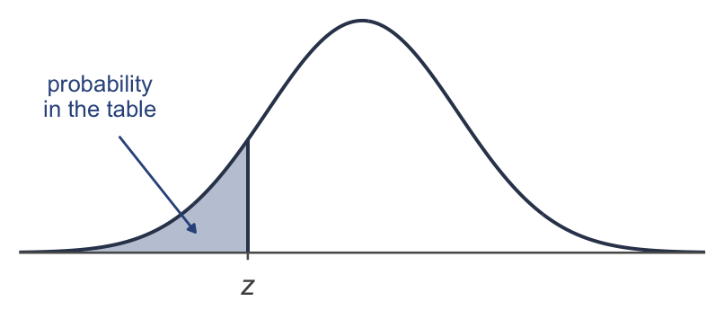
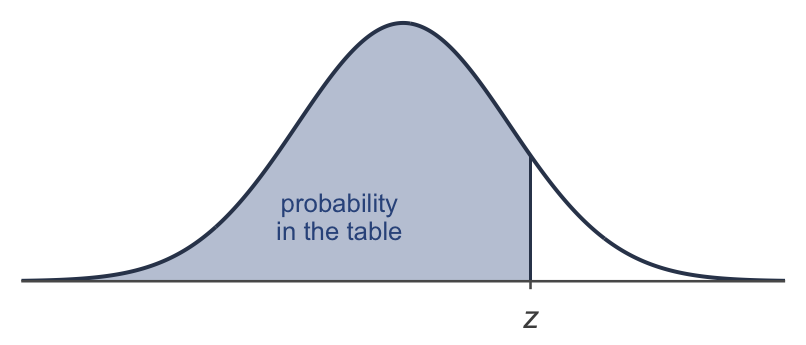

Table A · the standard normal distribution
from z to a probability, and back
The table gives the area under the standard normal curve to the left of z. An area is a probability: the probability that a z is smaller than yours. In a formula you write it as P(Z < z).
How to read it
Look at the picture first. The blue part is what the table gives you: everything to the left of z. The table always gives the part on the left, even when you need the part on the right.
Then the row and the column. The row gives z to one decimal place; the top gives the second decimal. You stick them together: row 0.4 and column .07 is z = 0.47, and row 1.5 and column .00 is z = 1.50. Where the row and the column meet, you find the probability.
cell = the probability to the left of z right = 1 − cell two tails = 2 × the small tail
All of it together is always 1, so the right is 1 minus the left. There are two pages: first the negative z, then the positive. If you need the small tail on the left, you find it at a negative z in one go.
From z to a probability
In week 0 someone scored 65 on the worry questionnaire, with = 50 and = 10:
- A positive z, so the second page. Row 1.5, column .00: .9332. That share of people scores lower.
- To the right of it: 1 − .9332 = .0668. You also find that in one go on the first page, at z = −1.50: the same .0668. About seven in a hundred score that high or higher.
- If you test two-tailed (week 2), you multiply the small tail by two: 2 × .0668 = .1336.
From a probability to z
Now the other way round: which z has .05 to its left? Then you don’t look in the margin but inside the table, among the probabilities. .05 is a small tail on the left, so the first page.
In row −1.6 it says .0505 at z = −1.64 and .0495 at z = −1.65. .05 lies exactly halfway between them, so z = −1.645. That is the other holy z-value from week 0, with a minus, because you are on the left.
Taking the halfway point doesn’t always work. Which z has .005 to its left? In row −2.5 it says .0051 at −2.57 and .0049 at −2.58, and .005 again lies exactly halfway between them. Halfway is −2.575, but exactly it is −2.576: here table A has one decimal too few, and can’t choose. Then take the row of table D: it says 2.576, without a minus, because that table gives the right-hand side. That is the third anchor from week 0, and the one you calculate with in this book.
Negative z

| z | .00 | .01 | .02 | .03 | .04 | .05 | .06 | .07 | .08 | .09 |
|---|---|---|---|---|---|---|---|---|---|---|
| −3.4 | .0003 | .0003 | .0003 | .0003 | .0003 | .0003 | .0003 | .0003 | .0003 | .0002 |
| −3.3 | .0005 | .0005 | .0005 | .0004 | .0004 | .0004 | .0004 | .0004 | .0004 | .0003 |
| −3.2 | .0007 | .0007 | .0006 | .0006 | .0006 | .0006 | .0006 | .0005 | .0005 | .0005 |
| −3.1 | .0010 | .0009 | .0009 | .0009 | .0008 | .0008 | .0008 | .0008 | .0007 | .0007 |
| −3.0 | .0013 | .0013 | .0013 | .0012 | .0012 | .0011 | .0011 | .0011 | .0010 | .0010 |
| −2.9 | .0019 | .0018 | .0018 | .0017 | .0016 | .0016 | .0015 | .0015 | .0014 | .0014 |
| −2.8 | .0026 | .0025 | .0024 | .0023 | .0023 | .0022 | .0021 | .0021 | .0020 | .0019 |
| −2.7 | .0035 | .0034 | .0033 | .0032 | .0031 | .0030 | .0029 | .0028 | .0027 | .0026 |
| −2.6 | .0047 | .0045 | .0044 | .0043 | .0041 | .0040 | .0039 | .0038 | .0037 | .0036 |
| −2.5 | .0062 | .0060 | .0059 | .0057 | .0055 | .0054 | .0052 | .0051 | .0049 | .0048 |
| −2.4 | .0082 | .0080 | .0078 | .0075 | .0073 | .0071 | .0069 | .0068 | .0066 | .0064 |
| −2.3 | .0107 | .0104 | .0102 | .0099 | .0096 | .0094 | .0091 | .0089 | .0087 | .0084 |
| −2.2 | .0139 | .0136 | .0132 | .0129 | .0125 | .0122 | .0119 | .0116 | .0113 | .0110 |
| −2.1 | .0179 | .0174 | .0170 | .0166 | .0162 | .0158 | .0154 | .0150 | .0146 | .0143 |
| −2.0 | .0228 | .0222 | .0217 | .0212 | .0207 | .0202 | .0197 | .0192 | .0188 | .0183 |
| −1.9 | .0287 | .0281 | .0274 | .0268 | .0262 | .0256 | .0250 | .0244 | .0239 | .0233 |
| −1.8 | .0359 | .0351 | .0344 | .0336 | .0329 | .0322 | .0314 | .0307 | .0301 | .0294 |
| −1.7 | .0446 | .0436 | .0427 | .0418 | .0409 | .0401 | .0392 | .0384 | .0375 | .0367 |
| −1.6 | .0548 | .0537 | .0526 | .0516 | .0505 | .0495 | .0485 | .0475 | .0465 | .0455 |
| −1.5 | .0668 | .0655 | .0643 | .0630 | .0618 | .0606 | .0594 | .0582 | .0571 | .0559 |
| −1.4 | .0808 | .0793 | .0778 | .0764 | .0749 | .0735 | .0721 | .0708 | .0694 | .0681 |
| −1.3 | .0968 | .0951 | .0934 | .0918 | .0901 | .0885 | .0869 | .0853 | .0838 | .0823 |
| −1.2 | .1151 | .1131 | .1112 | .1093 | .1075 | .1056 | .1038 | .1020 | .1003 | .0985 |
| −1.1 | .1357 | .1335 | .1314 | .1292 | .1271 | .1251 | .1230 | .1210 | .1190 | .1170 |
| −1.0 | .1587 | .1562 | .1539 | .1515 | .1492 | .1469 | .1446 | .1423 | .1401 | .1379 |
| −0.9 | .1841 | .1814 | .1788 | .1762 | .1736 | .1711 | .1685 | .1660 | .1635 | .1611 |
| −0.8 | .2119 | .2090 | .2061 | .2033 | .2005 | .1977 | .1949 | .1922 | .1894 | .1867 |
| −0.7 | .2420 | .2389 | .2358 | .2327 | .2296 | .2266 | .2236 | .2206 | .2177 | .2148 |
| −0.6 | .2743 | .2709 | .2676 | .2643 | .2611 | .2578 | .2546 | .2514 | .2483 | .2451 |
| −0.5 | .3085 | .3050 | .3015 | .2981 | .2946 | .2912 | .2877 | .2843 | .2810 | .2776 |
| −0.4 | .3446 | .3409 | .3372 | .3336 | .3300 | .3264 | .3228 | .3192 | .3156 | .3121 |
| −0.3 | .3821 | .3783 | .3745 | .3707 | .3669 | .3632 | .3594 | .3557 | .3520 | .3483 |
| −0.2 | .4207 | .4168 | .4129 | .4090 | .4052 | .4013 | .3974 | .3936 | .3897 | .3859 |
| −0.1 | .4602 | .4562 | .4522 | .4483 | .4443 | .4404 | .4364 | .4325 | .4286 | .4247 |
| −0.0 | .5000 | .4960 | .4920 | .4880 | .4840 | .4801 | .4761 | .4721 | .4681 | .4641 |
Positive z

| z | .00 | .01 | .02 | .03 | .04 | .05 | .06 | .07 | .08 | .09 |
|---|---|---|---|---|---|---|---|---|---|---|
| 0.0 | .5000 | .5040 | .5080 | .5120 | .5160 | .5199 | .5239 | .5279 | .5319 | .5359 |
| 0.1 | .5398 | .5438 | .5478 | .5517 | .5557 | .5596 | .5636 | .5675 | .5714 | .5753 |
| 0.2 | .5793 | .5832 | .5871 | .5910 | .5948 | .5987 | .6026 | .6064 | .6103 | .6141 |
| 0.3 | .6179 | .6217 | .6255 | .6293 | .6331 | .6368 | .6406 | .6443 | .6480 | .6517 |
| 0.4 | .6554 | .6591 | .6628 | .6664 | .6700 | .6736 | .6772 | .6808 | .6844 | .6879 |
| 0.5 | .6915 | .6950 | .6985 | .7019 | .7054 | .7088 | .7123 | .7157 | .7190 | .7224 |
| 0.6 | .7257 | .7291 | .7324 | .7357 | .7389 | .7422 | .7454 | .7486 | .7517 | .7549 |
| 0.7 | .7580 | .7611 | .7642 | .7673 | .7704 | .7734 | .7764 | .7794 | .7823 | .7852 |
| 0.8 | .7881 | .7910 | .7939 | .7967 | .7995 | .8023 | .8051 | .8078 | .8106 | .8133 |
| 0.9 | .8159 | .8186 | .8212 | .8238 | .8264 | .8289 | .8315 | .8340 | .8365 | .8389 |
| 1.0 | .8413 | .8438 | .8461 | .8485 | .8508 | .8531 | .8554 | .8577 | .8599 | .8621 |
| 1.1 | .8643 | .8665 | .8686 | .8708 | .8729 | .8749 | .8770 | .8790 | .8810 | .8830 |
| 1.2 | .8849 | .8869 | .8888 | .8907 | .8925 | .8944 | .8962 | .8980 | .8997 | .9015 |
| 1.3 | .9032 | .9049 | .9066 | .9082 | .9099 | .9115 | .9131 | .9147 | .9162 | .9177 |
| 1.4 | .9192 | .9207 | .9222 | .9236 | .9251 | .9265 | .9279 | .9292 | .9306 | .9319 |
| 1.5 | .9332 | .9345 | .9357 | .9370 | .9382 | .9394 | .9406 | .9418 | .9429 | .9441 |
| 1.6 | .9452 | .9463 | .9474 | .9484 | .9495 | .9505 | .9515 | .9525 | .9535 | .9545 |
| 1.7 | .9554 | .9564 | .9573 | .9582 | .9591 | .9599 | .9608 | .9616 | .9625 | .9633 |
| 1.8 | .9641 | .9649 | .9656 | .9664 | .9671 | .9678 | .9686 | .9693 | .9699 | .9706 |
| 1.9 | .9713 | .9719 | .9726 | .9732 | .9738 | .9744 | .9750 | .9756 | .9761 | .9767 |
| 2.0 | .9772 | .9778 | .9783 | .9788 | .9793 | .9798 | .9803 | .9808 | .9812 | .9817 |
| 2.1 | .9821 | .9826 | .9830 | .9834 | .9838 | .9842 | .9846 | .9850 | .9854 | .9857 |
| 2.2 | .9861 | .9864 | .9868 | .9871 | .9875 | .9878 | .9881 | .9884 | .9887 | .9890 |
| 2.3 | .9893 | .9896 | .9898 | .9901 | .9904 | .9906 | .9909 | .9911 | .9913 | .9916 |
| 2.4 | .9918 | .9920 | .9922 | .9925 | .9927 | .9929 | .9931 | .9932 | .9934 | .9936 |
| 2.5 | .9938 | .9940 | .9941 | .9943 | .9945 | .9946 | .9948 | .9949 | .9951 | .9952 |
| 2.6 | .9953 | .9955 | .9956 | .9957 | .9959 | .9960 | .9961 | .9962 | .9963 | .9964 |
| 2.7 | .9965 | .9966 | .9967 | .9968 | .9969 | .9970 | .9971 | .9972 | .9973 | .9974 |
| 2.8 | .9974 | .9975 | .9976 | .9977 | .9977 | .9978 | .9979 | .9979 | .9980 | .9981 |
| 2.9 | .9981 | .9982 | .9982 | .9983 | .9984 | .9984 | .9985 | .9985 | .9986 | .9986 |
| 3.0 | .9987 | .9987 | .9987 | .9988 | .9988 | .9989 | .9989 | .9989 | .9990 | .9990 |
| 3.1 | .9990 | .9991 | .9991 | .9991 | .9992 | .9992 | .9992 | .9992 | .9993 | .9993 |
| 3.2 | .9993 | .9993 | .9994 | .9994 | .9994 | .9994 | .9994 | .9995 | .9995 | .9995 |
| 3.3 | .9995 | .9995 | .9995 | .9996 | .9996 | .9996 | .9996 | .9996 | .9996 | .9997 |
| 3.4 | .9997 | .9997 | .9997 | .9997 | .9997 | .9997 | .9997 | .9997 | .9997 | .9998 |